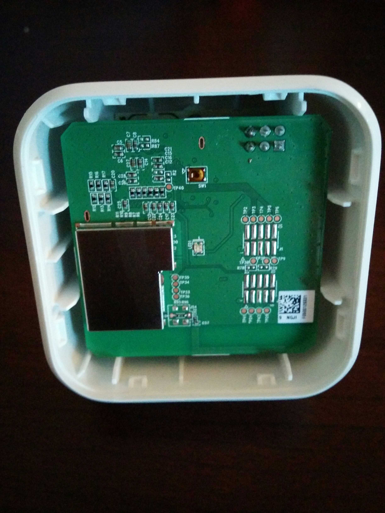
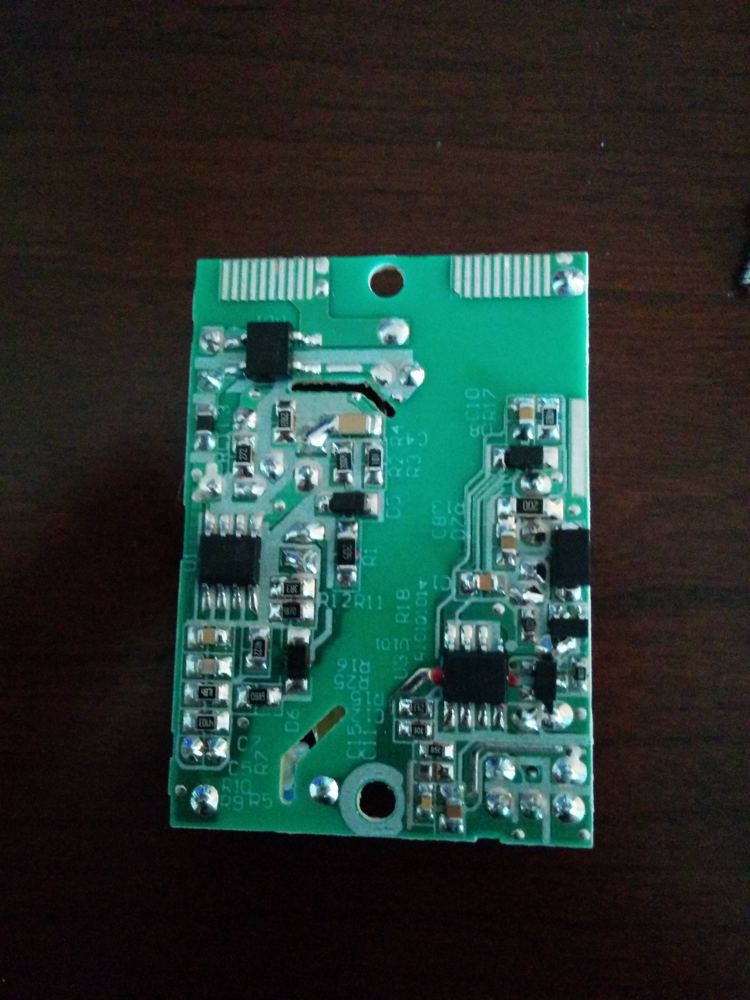

Blanked out the serial number for my own anonymity.
Blanked out the serial number for my own anonymity.
Model: AC-R1 Rating: 100-240V 50-60Hz 0.1A
FCC: 2AB6UACR1 IC: 12163A-ACR1
 Button seems only to be used for resetting the configuration.
Button seems only to be used for resetting the configuration.
 The logic board sits atop the power board, free-floating on its power connector. The group of six header pins indicates where the power connector is. A spudger can be carefully used adjacent to this for prying the board off.
 Center hole is for logic board LED to shine through. Hole itself isn't visible on front.
Center hole is for logic board LED to shine through. Hole itself isn't visible on front.
 Rectangular metal cover is probably for the WiFi module. It is soldered directly to the board on all edges.
Rectangular metal cover is probably for the WiFi module. It is soldered directly to the board on all edges.
Power connector, ICs, microcontroller
48SHM401.0GA
2014/11/07
1448-01
CK 77-1 3
94V-0
E85792
88MC200-NAP2
YPM26805JW
1436 A1P
TW
WINBOND
25Q32FVS1G
1422

 All of the components are glued together inexpertly.
The device gets a bit warm when plugged in.
I hate to think of what might happen if a component fails.
All of the components are glued together inexpertly.
The device gets a bit warm when plugged in.
I hate to think of what might happen if a component fails.
2014-01-06 *obscured* 1.71

KSP20A0330100
WEMO Bridge
CapXon
5.6µF400V

CapXon
8.2µF400V
 Board screws down so contacts at top of board rest against contact component